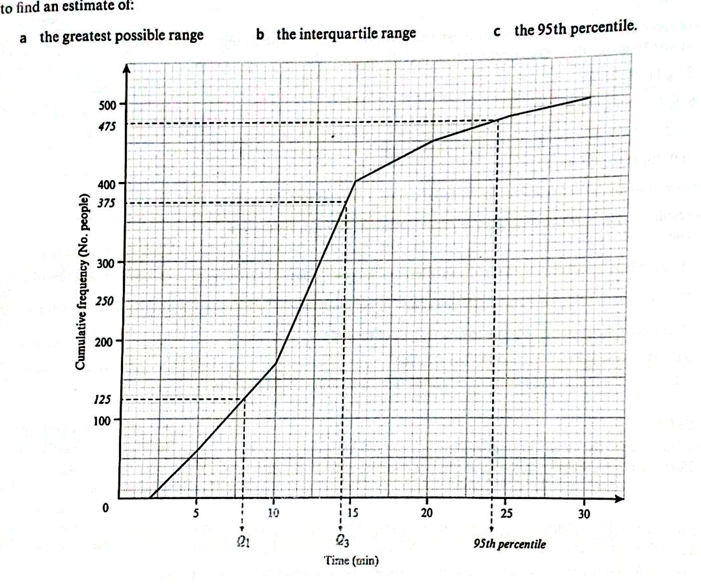
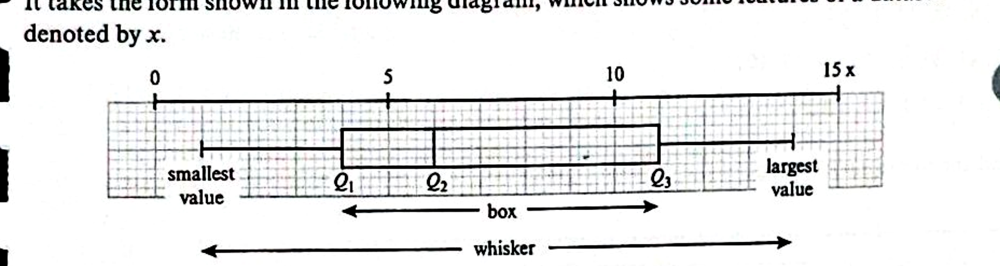
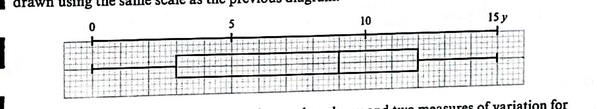

Reading quartiles and percentiles from grouped data, and summarising shape in a single picture.
Cambridge 9709 Paper 5 · Topic 5.1 · Ch 3 §3.3
Read horizontally at the heights:
For grouped data the curve gives estimates, not exact values.

Five-number summary on one axis: min · $Q_1$ · $Q_2$ · $Q_3$ · max. The box spans the IQR; the whiskers reach the extremes.

Why it beats a mean + SD snapshot: you see spread, centre, and asymmetry at a glance, and outliers can be flagged separately.
Symmetric: median sits mid-box; whiskers equal.
Positive skew: median closer to $Q_1$; longer upper whisker — a tail of large values.
Negative skew: median closer to $Q_3$; longer lower whisker — a tail of small values.
Compare median position to both the box and the whiskers.

The following table shows the cumulative frequencies for values of $x$. [Exercise 3A Q11]
| $<0$ | $<10$ | $<15$ | $<25$ | $<30$ | $<40$ |
|---|---|---|---|---|---|
| 0 | 12 | 30 | 90 | 102 | 120 |
Without drawing a CF graph, find (a) the interquartile range, (b) the 85th percentile.
The numbers of fouls in eight hockey matches and eight football matches are shown below. [Exercise 3A Q4a]
Hockey (8) | | Football (8) Key: 6 | 1 | 8
4 2 1 | 1 | 0 represents 16 fouls
9 8 6 | 1 | 8 9 9 in hockey and 18
4 1 | 2 | 1 2 3 3 fouls in football
Is it true to say that the numbers of fouls in the two sports are equally varied? Justify with both measures of spread.